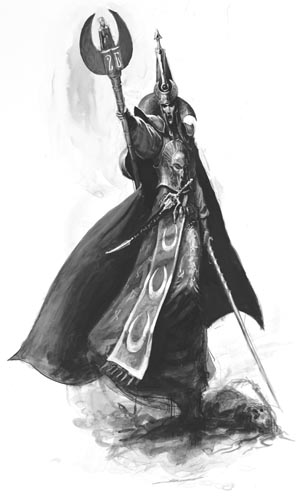

Forums galactiques > Assemblée Galactique : diplomatie officielle > Comme un lion
Pages : 1
| John Quick Respect diplomatique : 536  01/12 ETU 22:40 | Score : 9 Détails Des pas métalliques résonnèrent dans l'assemblée.
Un homme se dirigeait vers le pupitre des discours. Il était assez grand, imposant, et son visage (au crâne rasé et à la barbe brune) paraissait jeune. Il portait une imposante armure en or. Un grand marteau d'argent était accroché dans son dos, ainsi qu'un magnifique blaster. Un scaphandre en verre lui recouvrait la tête. Il avait une démarche assurée et une certaine grâce émanait de son être. Sans hésiter un seul moment, il se placa derrière le pupitre et prit la parole : - Noble assemblée, je vous salue. Que vos journées soient paisibles et vos nuits doublement. Il parlait avec assurance. Sa voix, jeune, forte et rugueuse, était cependant très agréable à l'écoute. Il souriait. Une créature à la peau violette fut pris d'un quinte de toux dans le fond de la salle. L'homme à l'armure d'or patienta jusqu'à ce que cela cesse. - Je suis le Robocrate, de la planète Flash. C'est la première fois que je me présente en cet illustre endroit. Si je suis ici, veuillez bien le croire, c'est qu'une affaire importante m'y amène. Mes ambassadeurs, envoyés sur la planète d'Alpha Deimos, m'ont fait part de faits importants. Je parle ici à ceux qui ont connus Yerog Mansfeld, le chancelier. Je parle à ceux qui l'ont connus, à ceux qui l'ont appréciés, à ceux à qui il manque. A l'heure exacte ou Yerog Mansfeld faisait son retour à l'assemblée pour nous annoncer son retrait de la vie politique, un "autre" Yerog Mansfeld faisait route dans une navette qui fuyait le sanicentre d'Alpha Deimos pour une direction inconnue. Le commandant John Quick était dans cette navette. Depuis lors, nous n'avons plus aucunes nouvelles de lui. L'ambassadrice Kim Van Bilde était dans la pièce où, soi-disant, Mansfeld proclamait son discours. Les heures coordonnent. Il y a tromperie et mensonge. Il s'interrompit et scruta l'assemblée. Son sourire avait disparu. - J'espère que cette assemblée réfléchira à ce que cela veut dire. J'espère que cette assemblée comprendra que le gouvernement actuel, Aurore, Genèse, le Haut Chapitre, nous impose sa gouvernance et nous trompe. J'espère que ces faits mettrons en lumière le malaise actuel qui règne en la galaxie des éxilés. On ne peut nous imposer de telles choses. Je fait un appel à tous les commandants prêts à s'investir et à se prendre en main. Sa voix montait en intensité. - Ensemble, construisons quelque chose de neuf. Sa voix emplissait maintenant chaque recoin de l'immense pièce. - Ensemble, remettons sur pied cette galaxie ! On aurait dit qu'une infinité d'orateurs déclamaient à l'unisson. - Nous sommes les seuls maitres de nos destinées ! Mieux vaut vivre une journée comme un lion que cent jours comme un chien !!! Il s'arrêta. Les échos de sa voix se répercutèrent longuement sur le plafond de l'assemblée. Il scruta à nouveau l'assemblée, en attente de réactions. ........................................................................................................................... N'oubliez pas de faire un refresh F5 http://apocalypsis.free.fr/histoire/index.php?title=Robocratie ........................................................................................................................... | ||
| annarion Respect diplomatique : 268  01/12 ETU 23:29  | Score : 3 Détails L’ambassadeur, Elketirion de Lindolir demanda la parole, il n’eut aucune peine à l’obtenir, tout le monde craignait une intervention depuis que le nouveau gouvernement s’était mis en place. Mais l’empire de Theotihuacan, avait survécu à bien des crises. L’ambassadeur s’avança lentement et assurance vers le cœur de l’assemblée, parvenu devant le pupitre, il s’inclina et s’adressa à l’assemblée :
« Aneis eneltep arewa iru axayancatl. » « Noble assemblée en réponse à la dernière déclaration du représentant de l’empire Robocrate, nous dirons que nos précédentes déclarations sont claires quant à notre interprétation de la dernière intervention de l’ex-chancelier. Nous considérons que cette dernière intervention est très suspecte quant à son authenticité, et vraisemblablement une grossière mise en scène. Nous avons déjà exprimé notre point de vue concernant la situation actuelle et nous continuons à réfléchir au projet d’un système politique parallèle à celui du gouvernement qui pour le moment semble remis en cause, enfin selon toutes les apparences. Nous appelons tous les commandants souhaitant tenter l’expérience d’un nouveau système à nous rejoindre, quitte à ce qu’il ne puisse pas de suite engendrer l’unanimité, mais qui si il fonctionne pourra accueillir de nouveaux membres. Nous appelons ainsi tous les peuples épris de hautes valeurs morales et de principes de contacter notre ambassade afin de discuter plus concrètement d’un projet concret.Nous espérons que cette réponse vous satisfait. Merci de nous avoir écouté. » L’ambassadeur revint s’asseoir à sa place, tout en observant au passage les visages des représentants du Sénat. | ||
| John Quick Respect diplomatique : 536 04/12 ETU 23:12 | Score : 0 Détails Le Robocrate continuait de scruter l'assemblée, espèrant qu'une autre personne prendrait la parole.
Ce qu'il craignait le plus semblait arriver. L'assemblée était indifférente, muette, résignée, ou dominée par la peur... Tout le monde regardait ou ses chaussures, ou le plafond. Pas un avis, pas un cri, pas un murmure... rien... C'était la pire des choses. Le silence. Il répondrait à l'ambassadeur de l’empire de Theotihuacan, mais il espérait encore d'autres interventions. Il avait encore foi en l'asemblée. | ||
| Arutha Respect diplomatique : 382  04/12 ETU 23:39 | Score : 4 Détails Robocrate,
Votre message est en effet fort préoccupant, cela dit, pourquoi vous croire vous plutôt qu'un autre ? Ne voyez pas la une marque d'irrespect, c'est juste que la confiance n'a jamais été mon point fort... De toutes manières, de grands changements se sont opérés sur Alpha Deimos, et je doute que même le peuple de Deimos, voir certains de ses dirigeants savent se qu'il se passe réellement sur leur propre planète. Dans ces conditions, et je m'en excuse, je ne peux que me contenter d'observer les évènements et attendre que de plus amples informations ne nous soient communiquées. J'ose espérer que votre commandant sera bientôt de retour au sein de votre nation, et que les dirigeants d'Alpha Deimos auront à coeur de contribuer à ce but, car il est de leur devoir d'assurer la sécurité des ambassadeurs qui sont venu les visiter. J'invite donc le nouveau gouvernement Deimosien à s'exprimer à ce sujet, car je pense que son avis intéresse bon nombre de commandants dans cette assemblée. |
Pages : 1
Forums galactiques > Assemblée Galactique : diplomatie officielle > Comme un lion